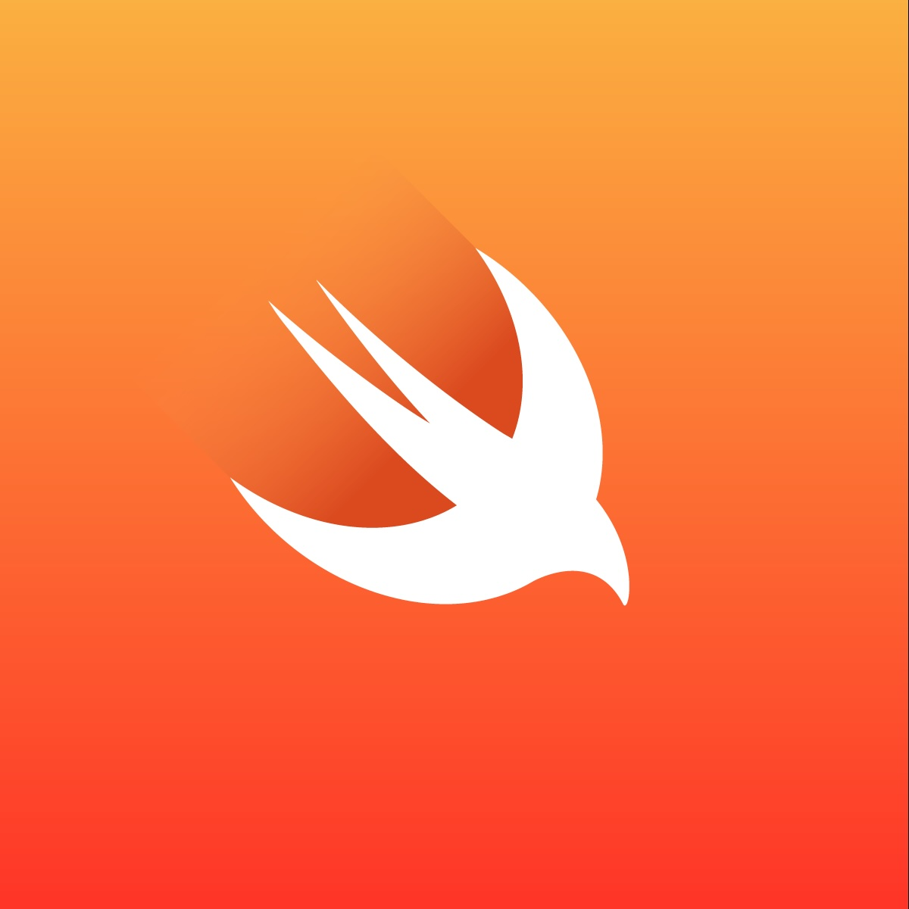

18, Jun 2024
Swift: Optionals
Optionals are a fundamental concept in Swift that allow you to represent values that may or may not be present. They're a powerful tool for handling potential `nil` values and preventing runtime errors. Long have we gone since the lovely numerous crashes our code was plagued with in the good ol' days of Objective-C.

Understanding OptionalsAn optional is a type that can hold either a value of the specified type or `nil`. This is particularly useful when dealing with values that might not always be available, such as data from a network request or user input.
var name: String? = "John"
var age: Int? = nil
In the above example, `name` is an optional string that currently holds the value "John", while `age` is an optional integer that is currently `nil`.
Creating OptionalsThere are several ways to create optionals:
•
Implicitly: When you declare a variable from a function which;s return type is optional without specifying a default value, it becomes an optional.
•
Explicitly: Use the `?` symbol after a type to indicate that it's optional.
*Using the `Optional` type:*• Wrap a value in the `Optional` type.
func getResult() -> Int? {
return nil
}
let x = getResult() // Implicitly optional
let y: String? = "Hello" // Explicitly optional
let z: Optional = Optional(true) // Using the Optional type, very uncommon though
Unwrapping OptionalsTo work with the value inside an optional, you need to unwrap it. There are several ways to unwrap optionals:
•
Forced Unwrapping: Use the `!` operator to force unwrap an optional. This should be done with caution, as it can lead to runtime errors if the optional is `nil`. In fact, many teams' lint rules contain a definit "No force unwraps". This means that it has been determined to be more dangerous to have a forced unwrap in your code than any extra work you may need to avoid it.
let name: String? = "John"
let greeting = "Hello, \(name!)" // Forced unwrapping

•
Optional Binding: Use `if let` or `guard let` to bind the value of an optional to a temporary constant or variable if it's not `nil`.
let name: String? = "John"
if let unwrappedName = name {
print("Hello, \(unwrappedName)!")
} else {
print("Name is nil")
}
Not only is this much safer at runtime, it also forces us to handle the other cases when the value is nil.
•
Nil-Coalescing Operator: Use the `??` operator to provide a default value if an optional is `nil`.
let name: String? = "John"
let greeting = "Hello, \(name ?? "World")"
This is pretty useful if you are working with a remote service where JSON keys are potentially not present or of an unpredictable value.
Optional ChainingOptional chaining is a concise way to access properties or call methods on optional values. If any of the optional values in the chain is `nil`, the chain is terminated, and the result is also `nil`. This prevents runtime errors.
let person: Person? = Person(name: "Alice")
let city = person?.address?.city // city is of type String?
Best Practices•
Use optional binding and nil-coalescing: These techniques are safer than forced unwrapping, by far.
•
Avoid forced unwrapping: Only use forced unwrapping when you're absolutely certain that the optional value will never be `nil`.
•
Consider using guard statements with optional chaining: Guard statements can help you avoid nested `if-else` blocks when dealing with multiple nested optionals.
•
Test your code thoroughly: Ensure that your code handles `nil` values gracefully.
Optionals are a powerful feature in Swift that allow you to write safer and more robust code. By understanding their syntax, use cases, and best practices, you can effectively handle optional values in your applications. I admit how difficult it was to wrap my head around these concepts back since Swift's inception. But many years later it's decisively one of the ever best improvements in modern languages.